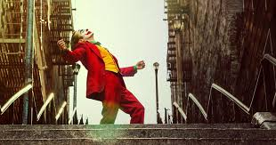
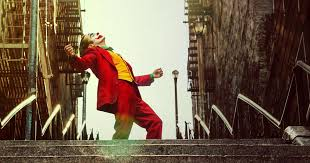

Year: 2019
Country: USA
Genre: Drama, Detective & Thriller
Duration: 2 hours 02 minutes
"The Joker" tells the story of the origin of the cult avenger and the first reasons for its formation, and presents an original, completely different story, such as the one that has not yet been released on the big screen. Arthur Fleck (Joaquin Phoenix), painted by director Todd Phillips, a man who has angered the public, is not only a bold proposition for such a character, but also a broader look at caution.
 
